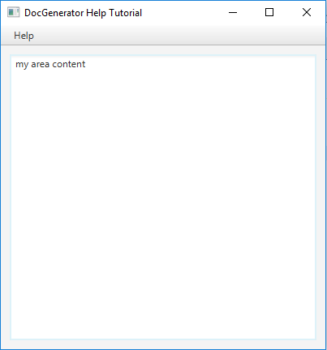
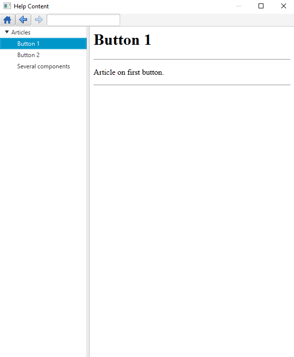
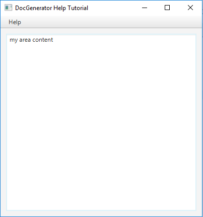
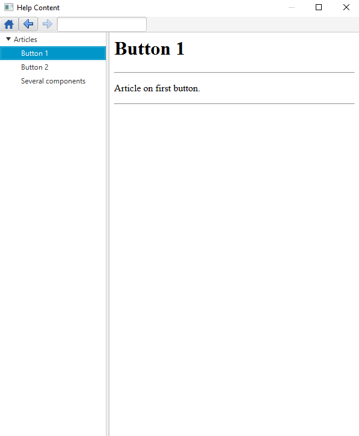

Help system JavaFX tutorial
1 Create the help content
2 Generate the help content
3 Create our JavaFX application
4 Integrating the help content in our JavaFX application
5 Launch our application
6 See Also
2 Generate the help content
3 Create our JavaFX application
4 Integrating the help content in our JavaFX application
5 Launch our application
6 See Also
This article is tutorial which explains how to produce and use a Help content in a JavaFX application. You will:
Now we have a file named
You should note that we unchecked the "Optimized for Swing" checkbox (see help content optimization for more information on that). However in this case as there are no images in the wiki the JavaFX content would be the same as the content generated for Swing.
Note the structure of the zip file:

Before we add our help system, copy the generated
Now its done. Let's understand more precisely what we did:

- Generate a zip file containing the help content
- Use this content to create a help system for a JavaFX application
Create the help content
We will reuse the content specified for the . Help system Swing tutorialGenerate the help content
Let's generate our help content. Double-click on the jar file of the application and:- Input directories: Set your directory
- Output directory: Set another empty directory for the help content result
- Output type: Set "HELP" as the output type
- Don't optimize for Swing: Uncheck the "optimize for Swing" checkbox
- Click on "Apply"
Now we have a file named
articles.zip at the same level as the output directory. This file contains the Help content generated with the content of our wiki.You should note that we unchecked the "Optimized for Swing" checkbox (see help content optimization for more information on that). However in this case as there are no images in the wiki the JavaFX content would be the same as the content generated for Swing.
Note the structure of the zip file:
articles resources -- articles.xml -- index.html -- README.txtThe
articles.xml contains the names and the paths of all the articles of the wiki, which will be used by the Help System.
Create our JavaFX application
In our example we will just use a Stage which will show the content of our help system upon clicing on a Menu item. First we will create our very simple application with a MenuBar but without our help system:public class JFXJavaHelp extends Application { @Override public void start(Stage primaryStage) { BorderPane root = createLayout(primaryStage); Scene scene = new Scene(root, 400, 400); primaryStage.setTitle("DocGenerator Help Tutorial"); primaryStage.setScene(scene); primaryStage.show(); } private void createContent(BorderPane root) { TextArea area = new TextArea(); area.setStyle("-fx-background-color: null;"); Insets insets = new Insets(10, 10, 10, 10); area.setPadding(insets); area.setText("my area content"); root.setCenter(area); } private void createMenu(VBox top) { MenuBar menuBar = new MenuBar(); top.getChildren().add(menuBar); Menu menu = new Menu("Help"); menuBar.getMenus().add(menu); MenuItem item = new MenuItem("Help Content"); menu.getItems().add(item); item.setOnAction(new EventHandler<ActionEvent>() { @Override public void handle(ActionEvent e) { } }); } private BorderPane createLayout(Stage stage) { BorderPane root = new BorderPane(); VBox top = new VBox(); root.setTop(top); createContent(root); createMenu(top); return root; } public static void main(String[] args) { launch(args); } }

Integrating the help content in our JavaFX application
Now we will integrate a Help system with our Help content in this application.Before we add our help system, copy the generated
articles.zip alongside our application. First we need to initialize our Help factory: @Override public void start(Stage primaryStage) { createFactory(); BorderPane root = createLayout(primaryStage); Scene scene = new Scene(root, 400, 400); primaryStage.setTitle("DocGenerator Help Tutorial"); primaryStage.setScene(scene); primaryStage.show(); }
private void createFactory() { URL url = this.getClass().getResource("resources/articles.zip"); factory = new JavaHelpFactory(url); try { factory.create(); } catch (IOException | SAXException ex) { ex.printStackTrace(); } }Now we will create a
JFXHelpContentViewer, install the Help content on this viewer, and create our HelpWindow: private BorderPane createLayout(Stage stage) { BorderPane root = new BorderPane(); VBox top = new VBox(); root.setTop(top); try { viewer = new JFXHelpContentViewer(); factory.install(viewer); viewer.getHelpWindow(stage, "Help Content", 600, 700); } catch (IOException ex) { ex.printStackTrace(); } createContent(root); createMenu(top); return root; }The last step is to wire our help item to the help content:
private void createMenu(VBox top) { MenuBar menuBar = new MenuBar(); top.getChildren().add(menuBar); Menu menu = new Menu("Help"); menuBar.getMenus().add(menu); MenuItem item = new MenuItem("Help Content"); menu.getItems().add(item); item.setOnAction(new EventHandler<ActionEvent>() { @Override public void handle(ActionEvent e) { viewer.showHelpDialog(menu.getGraphic()); } }); }See the full source code for the example
Now its done. Let's understand more precisely what we did:
- Get the URL of the zip file container the help content. This URL have been generated by the help content generation
- Create the
JavaHelpFactory:
JavaHelpFactory factory = new JavaHelpFactory(url); factory.create();
- Create a
JFXHelpContentViewerand install the model on this viewer:
JFXHelpContentViewer viewer = new JFXHelpContentViewer(); factory.installModel(viewer);
- In this case we created the Help window by
viewer.getHelpWindow(stage, "Help Content", 600, 700)but we did not need in this case to use this Window directly. It is performed by theviewer.showHelpDialog(menu.getGraphic())code. We could have use the Help window or directly get the Help component byviewer.getHelpComponent()
Launch our application
Now the help system is integrated in our JavaFX application, and the following Window appear upon clicking on the "Help Content" menu item:
See Also
- Tutorials: This article presents a list of tutorials
- Help system: This article explains how to use the JavaHelp-like feature of the tool
- Help JavaFX API: This article explains how to use the Help JavaFX API
×

Categories: javahelp | tutorials